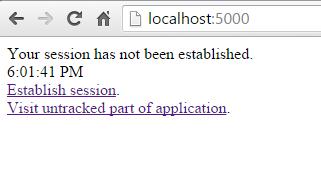
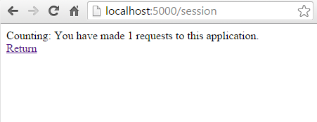
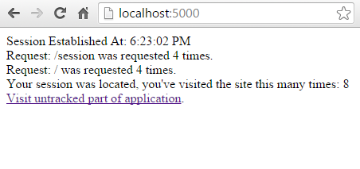

Managing Application State¶
By Steve Smith
In ASP.NET Core, application state can be managed in a variety of ways, depending on when and how the state is to be retrieved. This article provides a brief overview of several options, and focuses on installing and configuring Session state support in ASP.NET Core applications.
Sections
Application State Options¶
Application state refers to any data that is used to represent the current representation of the application. This includes both global and user-specific data. Previous versions of ASP.NET (and even ASP) have had built-in support for global Application and Session state stores, as well as a variety of other options.
Note
The Application store had the same characteristics as the ASP.NET Cache, with fewer capabilities. In ASP.NET Core, Application no longer exists; applications written for previous versions of ASP.NET that are migrating to ASP.NET Core replace Application with a Caching implementation.
Application developers are free to use different state storage providers depending on a variety of factors:
- How long does the data need to persist?
- How large is the data?
- What format is the data?
- Can it be serialized?
- How sensitive was the data? Could it be stored on the client?
Based on answers to these questions, application state in ASP.NET Core apps can be stored or managed in a variety of ways.
HttpContext.Items¶
The Items collection is the best location to store data that is only needed while processing a given request. Its contents are discarded after each request. It is best used as a means of communicating between components or middleware that operate at different points in time during a request, and have no direct relationship with one another through which to pass parameters or return values. See Working with HttpContext.Items, below.
Querystring and Post¶
State from one request can be provided to another request by adding values to the new request’s querystring or by POSTing the data. These techniques should not be used with sensitive data, because these techniques require that the data be sent to the client and then sent back to the server. It is also best used with small amounts of data. Querystrings are especially useful for capturing state in a persistent manner, allowing links with embedded state to be created and sent via email or social networks, for use potentially far into the future. However, no assumption can be made about the user making the request, since URLs with querystrings can easily be shared, and care must also be taken to avoid Cross-Site Request Forgery (CSRF) attacks (for instance, even assuming only authenticated users are able to perform actions using querystring-based URLs, an attacker could trick a user into visiting such a URL while already authenticated).
Cookies¶
Very small pieces of state-related data can be stored in Cookies. These are sent with every request, and so the size should be kept to a minimum. Ideally, only an identifier should be used, with the actual data stored somewhere on the server, keyed to the identifier.
Session¶
Session storage relies on a cookie-based identifier to access data related to a given browser session (a series of requests from a particular browser and machine). You can’t necessarily assume that a session is restricted to a single user, so be careful what kind of information you store in Session. It is a good place to store application state that is specific to a particular session but which doesn’t need to be persisted permanently (or which can be reproduced as needed from a persistent store). See Installing and Configuring Session, below for more details.
Cache¶
Caching provides a means of storing and efficiently retrieving arbitrary application data based on developer-defined keys. It provides rules for expiring cached items based on time and other considerations. Learn more about Caching.
Configuration¶
Configuration can be thought of as another form of application state storage, though typically it is read-only while the application is running. Learn more about Configuration.
Other Persistence¶
Any other form of persistent storage, whether using Entity Framework and a database or something like Azure Table Storage, can also be used to store application state, but these fall outside of what ASP.NET supports directly.
Working with HttpContext.Items¶
The HttpContext abstraction provides support for a simple dictionary collection of type IDictionary<object, object>, called Items. This collection is available from the start of an HttpRequest` and is discarded at the end of each request. You can access it by simply assigning a value to a keyed entry, or by requesting the value for a given key.
For example, some simple Middleware could add something to the Items collection:
app.Use(async (context, next) =>
{
// perform some verification
context.Items["isVerified"] = true;
await next.Invoke();
});
and later in the pipeline, another piece of middleware could access it:
app.Run(async (context) =>
{
await context.Response.WriteAsync("Verified request? "
+ context.Items["isVerified"]);
});
Note
Since keys into Items are simple strings, if you are developing middleware that needs to work across many applications, you may wish to prefix your keys with a unique identifier to avoid key collisions (e.g. “MyComponent.isVerified” instead of just “isVerified”).
Installing and Configuring Session¶
ASP.NET Core ships a session package that provides middleware for managing session state. You can install it by including a reference to the Microsoft.AspNetCore.Session package in your project.json file.
Once the package is installed, Session must be configured in your application’s Startup class. Session is built on top of IDistributedCache, so you must configure this as well, otherwise you will receive an error.
Note
If you do not configure at least one IDistributedCache implementation, you will get an exception stating “Unable to resolve service for type ‘Microsoft.Extensions.Caching.Distributed.IDistributedCache’ while attempting to activate ‘Microsoft.AspNetCore.Session.DistributedSessionStore’.”
ASP.NET ships with several implementations of IDistributedCache, including an in-memory option (to be used during development and testing only). To configure session using this in-memory option add the Microsoft.Extensions.Caching.Memory package in your project.json file and then add the following to ConfigureServices:
services.AddCaching();
services.AddSession();
Then, add the following to Configure and you’re ready to use session in your application code:
app.UseSession();
You can reference Session from HttpContext once it is installed and configured.
Note
If you attempt to access Session before UseSession has been called, you will get an InvalidOperationException exception stating that “Session has not been configured for this application or request.”
Warning
If you attempt to create a new Session (i.e. no session cookie has been created yet) after you have already begun writing to the Response stream, you will get an InvalidOperationException as well, stating that “The session cannot be established after the response has started”. This exception may not be displayed in the browser; you may need to view the web server log to discover it, as shown below:
Implementation Details¶
Session uses a cookie to track and disambiguate between requests from different browsers. By default this cookie is named ”.AspNet.Session” and uses a path of “/”. Further, by default this cookie does not specify a domain, and is not made available to client-side script on the page (because CookieHttpOnly defaults to true).
These defaults, as well as the default IdleTimeout (used on the server independent from the cookie), can be overridden when configuring Session by using SessionOptions as shown here:
services.AddSession(options =>
{
options.CookieName = ".AdventureWorks.Session";
options.IdleTimeout = TimeSpan.FromSeconds(10);
});
The IdleTimeout is used by the server to determine how long a session can be idle before its contents are abandoned. Each request made to the site that passes through the Session middleware (regardless of whether Session is read from or written to within that middleware) will reset the timeout. Note that this is independent of the cookie’s expiration.
Note
Session is non-locking, so if two requests both attempt to modify the contents of session, the last one will win. Further, Session is implemented as a coherent session, which means that all of the contents are stored together. This means that if two requests are modifying different parts of the session (different keys), they may still impact each other.
ISession¶
Once session is installed and configured, you refer to it via HttpContext, which exposes a property called Session of type ISession. You can use this interface to get and set values in Session, as byte[].
public interface ISession
{
Task LoadAsync();
Task CommitAsync();
bool TryGetValue(string key, out byte[] value);
void Set(string key, byte[] value);
void Remove(string key);
void Clear();
IEnumerable<string> Keys { get; }
}
Because``Session`` is built on top of IDistributedCache, you must always serialize the object instances being stored. Thus, the interface works with byte[] not simply object. However, there are extension methods that make working with simple types such as String and Int32 easier, as well as making it easier to get a byte[] value from session.
// session extension usage examples
context.Session.SetInt32("key1", 123);
int? val = context.Session.GetInt32("key1");
context.Session.SetString("key2", "value");
string stringVal = context.Session.GetString("key2");
byte[] result = context.Session.Get("key3");
If you’re storing more complex objects, you will need to serialize the object to a byte[] in order to store them, and then deserialize them from byte[] when retrieving them.
A Working Sample Using Session¶
The associated sample application demonstrates how to work with Session, including storing and retrieving simple types as well as custom objects. In order to see what happens when session expires, the sample has configured sessions to last just 10 seconds:
1 2 3 4 5 6 7 8 9 | public void ConfigureServices(IServiceCollection services)
{
services.AddCaching();
services.AddSession(options =>
{
options.IdleTimeout = TimeSpan.FromSeconds(10);
});
}
|
When you first navigate to the web server, it displays a screen indicating that no session has yet been established:
This default behavior is produced by the following middleware in Startup.cs, which runs when requests are made that do not already have an established session (note the highlighted sections):
1 2 3 4 5 6 7 8 9 10 11 12 13 14 15 16 17 18 19 20 21 22 23 24 25 26 27 28 29 | // main catchall middleware
app.Run(async context =>
{
RequestEntryCollection collection = GetOrCreateEntries(context);
if (collection.TotalCount() == 0)
{
await context.Response.WriteAsync("<html><body>");
await context.Response.WriteAsync("Your session has not been established.<br>");
await context.Response.WriteAsync(DateTime.Now.ToString() + "<br>");
await context.Response.WriteAsync("<a href=\"/session\">Establish session</a>.<br>");
}
else
{
collection.RecordRequest(context.Request.PathBase + context.Request.Path);
SaveEntries(context, collection);
// Note: it's best to consistently perform all session access before writing anything to response
await context.Response.WriteAsync("<html><body>");
await context.Response.WriteAsync("Session Established At: " + context.Session.GetString("StartTime") + "<br>");
foreach (var entry in collection.Entries)
{
await context.Response.WriteAsync("Request: " + entry.Path + " was requested " + entry.Count + " times.<br />");
}
await context.Response.WriteAsync("Your session was located, you've visited the site this many times: " + collection.TotalCount() + "<br />");
}
await context.Response.WriteAsync("<a href=\"/untracked\">Visit untracked part of application</a>.<br>");
await context.Response.WriteAsync("</body></html>");
|
GetOrCreateEntries is a helper method that will retrieve a RequestEntryCollection instance from Session if it exists; otherwise, it creates the empty collection and returns that. The collection holds RequestEntry instances, which keep track of the different requests the user has made during the current session, and how many requests they’ve made for each path.
1 2 3 4 5 | public class RequestEntry
{
public string Path { get; set; }
public int Count { get; set; }
}
|
1 2 3 4 5 6 7 8 9 10 11 12 13 14 15 16 17 18 19 20 21 22 | public class RequestEntryCollection
{
public List<RequestEntry> Entries { get; set; } = new List<RequestEntry>();
public void RecordRequest(string requestPath)
{
var existingEntry = Entries.FirstOrDefault(e => e.Path == requestPath);
if (existingEntry != null) { existingEntry.Count++; return; }
var newEntry = new RequestEntry()
{
Path = requestPath,
Count = 1
};
Entries.Add(newEntry);
}
public int TotalCount()
{
return Entries.Sum(e => e.Count);
}
}
|
Note
The types that are to be stored in session must be marked with [Serializable].
Fetching the current instance of RequestEntryCollection is done via the GetOrCreateEntries helper method:
1 2 3 4 5 6 7 8 9 10 11 12 13 14 15 16 | private RequestEntryCollection GetOrCreateEntries(HttpContext context)
{
RequestEntryCollection collection = null;
byte[] requestEntriesBytes = context.Session.Get("RequestEntries");
if (requestEntriesBytes != null && requestEntriesBytes.Length > 0)
{
string json = System.Text.Encoding.UTF8.GetString(requestEntriesBytes);
return JsonConvert.DeserializeObject<RequestEntryCollection>(json);
}
if (collection == null)
{
collection = new RequestEntryCollection();
}
return collection;
}
|
When the entry for the object exists in Session, it is retrieved as a byte[] type, and then deserialized using a MemoryStream and a BinaryFormatter, as shown above. If the object isn’t in Session, the method returns a new instance of the RequestEntryCollection.
In the browser, clicking the Establish session hyperlink makes a request to the path “/session”, and returns this result:
Refreshing the page results in the count incrementing; returning to the root of the site (after making a few more requests) results in this display, summarizing all of the requests that were made during the current session:
Establishing the session is done in the middleware that handles requests to “/session”:
1 2 3 4 5 6 7 8 9 10 11 12 13 14 15 16 17 18 19 20 | // establish session
app.Map("/session", subApp =>
{
subApp.Run(async context =>
{
// uncomment the following line and delete session coookie to generate an error due to session access after response has begun
// await context.Response.WriteAsync("some content");
RequestEntryCollection collection = GetOrCreateEntries(context);
collection.RecordRequest(context.Request.PathBase + context.Request.Path);
SaveEntries(context, collection);
if (context.Session.GetString("StartTime") == null)
{
context.Session.SetString("StartTime", DateTime.Now.ToString());
}
await context.Response.WriteAsync("<html><body>");
await context.Response.WriteAsync($"Counting: You have made {collection.TotalCount()} requests to this application.<br><a href=\"/\">Return</a>");
await context.Response.WriteAsync("</body></html>");
});
});
|
Requests to this path will get or create a RequestEntryCollection, will add the current path to it, and then will store it in session using the helper method SaveEntries, shown below:
1 2 3 4 5 6 7 | private void SaveEntries(HttpContext context, RequestEntryCollection collection)
{
string json = JsonConvert.SerializeObject(collection);
byte[] serializedResult = System.Text.Encoding.UTF8.GetBytes(json);
context.Session.Set("RequestEntries", serializedResult);
}
|
SaveEntries demonstrates how to serialize a custom object into a byte[] for storage in Session using a MemoryStream and a BinaryFormatter.
The sample includes one more piece of middleware worth mentioning, which is mapped to the “/untracked” path. You can see its configuration here:
1 2 3 4 5 6 7 8 9 10 11 12 13 | // example middleware that does not reference session at all and is configured before app.UseSession()
app.Map("/untracked", subApp =>
{
subApp.Run(async context =>
{
await context.Response.WriteAsync("<html><body>");
await context.Response.WriteAsync("Requested at: " + DateTime.Now.ToString() + "<br>");
await context.Response.WriteAsync("This part of the application isn't referencing Session...<br><a href=\"/\">Return</a>");
await context.Response.WriteAsync("</body></html>");
});
});
app.UseSession();
|
Note that this middleware is configured before the call to app.UseSession() is made (on line 13). Thus, the Session feature is not available to this middleware, and requests made to it do not reset the session IdleTimeout. You can confirm this behavior in the sample application by refreshing the untracked path several times within 10 seconds, and then return to the application root. You will find that your session has expired, despite no more than 10 seconds having passed between your requests to the application.